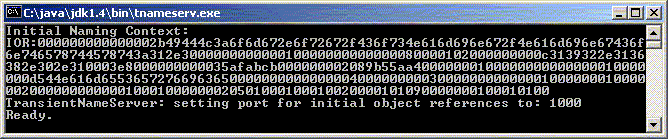
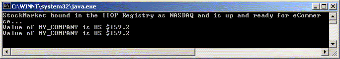

RMI-IIOP
Building an RMI/IIOP
Server Component
| Note |
| To
work with any of these samples, you will need the
following: .........................................JDK 1.3 or Higher (I use JDK version 1.4) .........................................The COS Naming JNDI Service Provider (I use JNDI version 1.2.1) |
Building Java/RMI Server Components that use OMG's IIOP (Internet Inter-ORB Protocol) wire protocol
JavaSoft provides the RMI-IIOP set of libraries which allow Java/RMI applications to use OMG's Internet Inter-ORB Protocol (IIOP) instead of Sun's proprietary Java Remote Method Protocol (JRMP). This has made it possible to write Java/RMI Servers that can be accessed not only by regular Java clients, but also from CORBA clients and vice versa.
|
Caveat Emptor Using RMI/IIOP, however, also means that there are restrictions imposed on the Remote interfaces that you define for your components. They are:
|
The good news is, just like RMI/JRMP, RMI/IIOP allows server objects to receive messages from multiple threads, so they should be thread-safe. Also make sure that the CORBA Object Request Broker (ORB) that you use supports CORBA 2.3 or higher. This allows you to pass objects by value across the wire. If you are using the ORB supplied by Sun, you should be fine.
In this article, we will build an RMI Server that can return the stock price of a stock given the symbol.
The various steps that are involved in creating an RMI Server that uses the IIOP protocol are as follows:
Create the Servant interface and the Servant component class
Create the RMI Server that can host these servant classes
Compile the class files and generate the Skeletons and IDL File
Start up the Server
1. Create the Servant Interface and Component Class File
Create the Servant interface - StockMarket.java - in a package called SimpleStocks.
| SimpleStocks/StockMarket.java | ||
|
Create an implementation of the interface, the Servant class - StockMarketImpl.java - in the same package - SimpleStocks. The easiest way to implement an RMI-IIOP Servant is to extend the PortableRemoteObject class as shown on Line 20. You also have the option of exporting non-Portable remote objects, but by extending this class you get the export function automatically. Your class also implements the StockMarket remote interface as shown on Line 21.
| SimpleStocks/StockMarketImpl.java | ||
|
2. Develop an RMI Server that can host these Servant Classes
Develop a Server Application called StockMarketServer.java. Instead of using the RMI Registry to make your servant objects available, you need to use the JNDI context that supports CosNaming. Using the InitialContext class as shown on Line 47, you need to rebind the Server onject to its known name as shown on Line 50.
| StockMarketServer.java | ||
|
To run the server, make sure you have the COS Naming Server (tnameservice.exe) provided by Sun up and running for this registration code to work.
3. Compile the Class Files and Generate the IIOP Skeletons and the IDL File
Compile the Server and Servant Classes.
| Command Prompt |
|
C:\MyProjects\Cornucopia\iiop>javac
-classpath . StockMarketServer.java C:\MyProjects\Cornucopia\iiop>javac -classpath . .\SimpleStocks\StockMarket.java .\SimpleStocks\StockMarketImpl.java C:\MyProjects\Cornucopia\iiop> |
Generate the IIOP Skeletons and the IDL File
| Command Prompt |
|
C:\MyProjects\Cornucopia\iiop>rmic
-classpath . -iiop -idl SimpleStocks.StockMarketImpl C:\MyProjects\Cornucopia\iiop> |
4. Startup the ORB Services and the RMI Server
Start up the servers as shown below.
| Command Prompt |
|
C:\MyProjects\Cornucopia\iiop>start
tnameserv -ORBInitialPort 1000 C:\MyProjects\Cornucopia\iiop>start java -classpath . StockMarketServer C:\MyProjects\Cornucopia\iiop> |
The screen shot below shows the COS Naming Services Server up and running.

The screen shot below shows our RMI Server up and running across Client invocations

Now you need to build a client applications that can access this Server.
Download the entire source code as a zip file.
click here to go
to
My
Advanced Java/J2EE Tutorial Page...
| About the Author... |
| Gopalan Suresh Raj is a Software Architect, Developer and an active Author. He has co-authored a number of books including "Professional JMS", "Enterprise Java Computing-Applications and Architecture" and "The Awesome Power of JavaBeans". His expertise spans enterprise component architectures and distributed object computing. Visit him at his Web Cornucopia© site (http://gsraj.tripod.com/) or mail him at gopalan@gmx.net. |
|
This site was developed and is maintained by Gopalan Suresh Raj This page has been visited |
|
Last Updated : Jan 13, '02 |
||
Copyright (c) 1997-2002, Gopalan Suresh Raj - All rights reserved. Terms of use. |
All products and companies mentioned at this site are trademarks of their respective owners. |